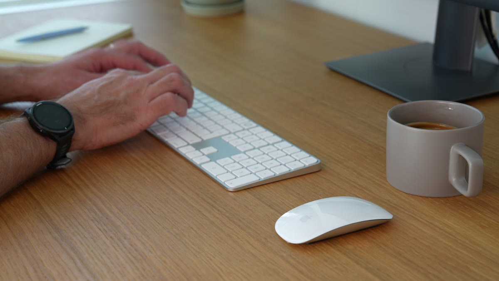
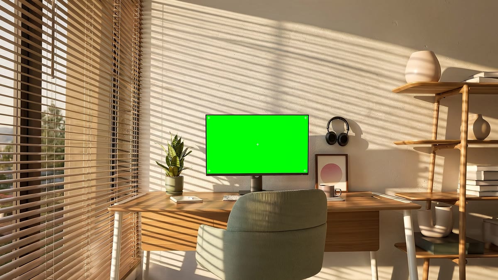
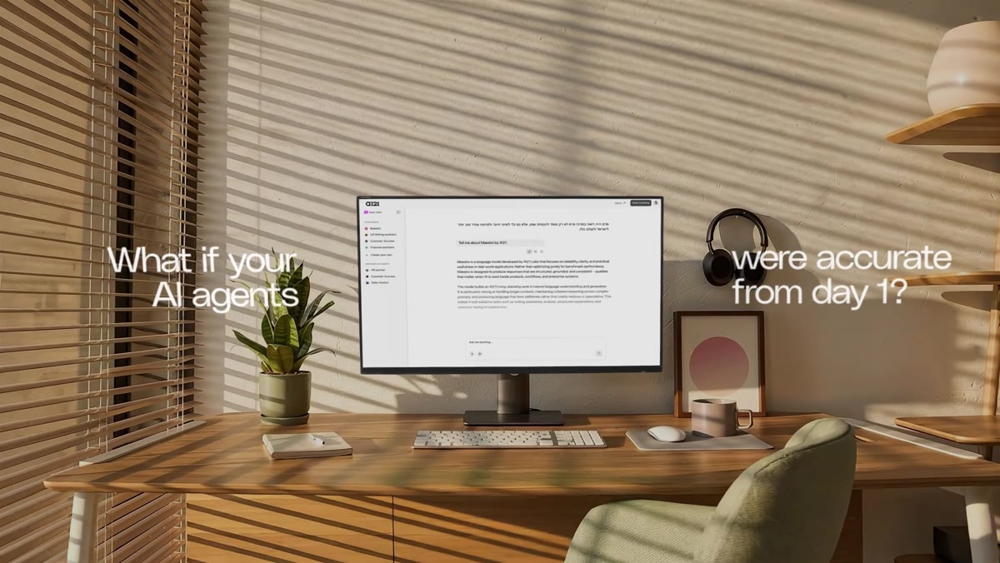
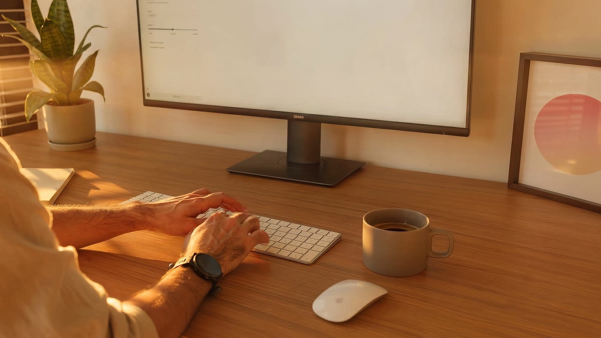
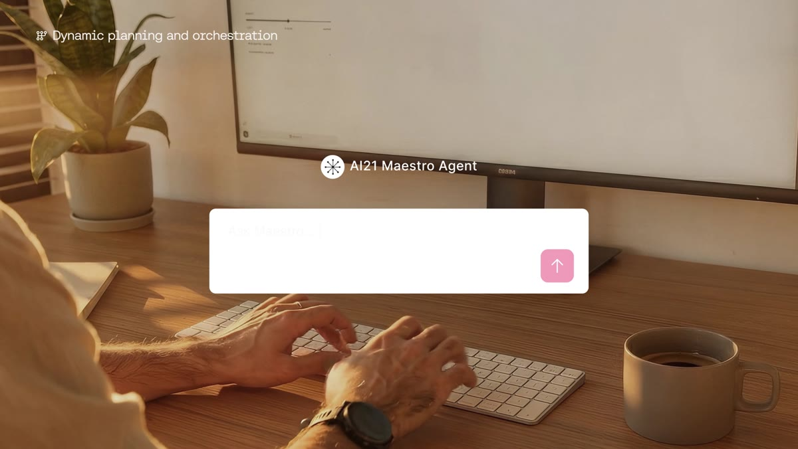

Maestro
Product VideoLaunch film for Maestro, AI21’s enterprise AI system, built on visual direction by designer Noam Rosenbaum. A sunlit 3D workspace sets the tone; interface and headline type arrive with calm, measured timing.
Credits
- DesignNoam Rosenbaum
- Motion DesignAriel Paz
Process
AI production
The live-action footage wasn't strong enough, so it was replaced with three matching AI-generated 4K shots, with a green screen built into the monitor. The Maestro UI was then tracked and composited in After Effects.




